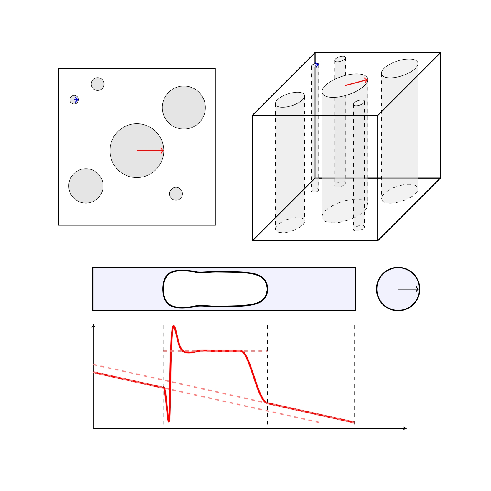

[4]
Pressure drop-flow rate nonlinearity in bubble trains through a capillary bundle
Physical Review Fluids, 11(7): 073601 · 2026
DOI: 10.1103/7z3l-zpzy
We investigate the effective rheology of a train of elongated bubbles of negligible viscosity flowing in capillary tubes. Building upon the classical Bretherton theory for a single bubble, we extend the analysis to a train of bubbles in a single capillary tube and finally to an array of parallel, noninteracting capillary tubes, i.e., a capillary bundle. Our goal is to characterize the nonlinear pressure drop-flow rate relation of this simplified two-phase system by incorporating the thin-film hydrodynamics at small capillary numbers. We model the structural heterogeneity of the bundle by assuming that the tube radii follow a truncated power-law distribution and examine deviations of the system from the Darcy law in terms of both its statistical properties and the parameters characterizing the bubble train (i.e., the tube slenderness ratio, the volume fraction, and the number of bubbles). The main result is that two-phase flow alters the effective rheology, leading to deviations from Darcy-type behavior across the entire parameter space investigated. Specifically, for a limited number of bubbles, the flow exhibits a smooth transition from the Bretherton regime, where the pressure drop scales with the flow rate to the power of 2/3, to weaker sublinear regimes with exponents between 2/3 and unity. Interestingly, increasing the number of bubbles or narrowing the pore-size distribution leads to only minor deviations from the Bretherton regime. The resulting pressure drop-flow rate exponents are qualitatively similar to those reported in the literature for immiscible two-phase flow in porous media, despite the inherent simplicity of the capillary bundle model.
We investigate the effective rheology of a train of elongated bubbles of negligible viscosity flowing in capillary tubes. Building upon the classical Bretherton theory for a single bubble, we extend the analysis to a train of bubbles in a single capillary tube and finally to an array of parallel, noninteracting capillary tubes, i.e., a capillary bundle. Our goal is to characterize the nonlinear pressure drop-flow rate relation of this simplified two-phase system by incorporating the thin-film hydrodynamics at small capillary numbers. We model the structural heterogeneity of the bundle by assuming that the tube radii follow a truncated power-law distribution and examine deviations of the system from the Darcy law in terms of both its statistical properties and the parameters characterizing the bubble train (i.e., the tube slenderness ratio, the volume fraction, and the number of bubbles). The main result is that two-phase flow alters the effective rheology, leading to deviations from Darcy-type behavior across the entire parameter space investigated. Specifically, for a limited number of bubbles, the flow exhibits a smooth transition from the Bretherton regime, where the pressure drop scales with the flow rate to the power of 2/3, to weaker sublinear regimes with exponents between 2/3 and unity. Interestingly, increasing the number of bubbles or narrowing the pore-size distribution leads to only minor deviations from the Bretherton regime. The resulting pressure drop-flow rate exponents are qualitatively similar to those reported in the literature for immiscible two-phase flow in porous media, despite the inherent simplicity of the capillary bundle model.
